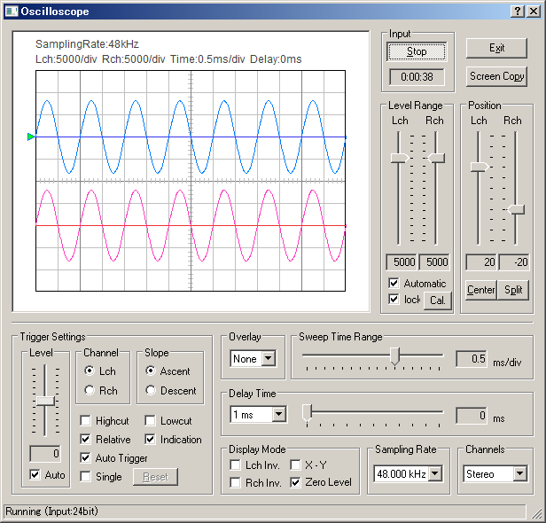

DSSF3 > RA > Reference Manual > Oscilloscope

| Item | Description | |
|---|---|---|
| Start (Stop) | Starts (and stops) an oscilloscope. | |
| Exit | Closes "Oscilloscope". | |
| Screen Copy | Click to capture the measurement screen. | |
| Level Range | Decides a value of one grid of the vertical axis in the oscilloscope display. For example, when the Level Range is set to 1, one grid becomes 1. When the Level Range is set to 32768, one grid becomes 32768. When the [Automatic] checkbox is marked, this value is set automatically so that the signal is displayed in an appropriate range. | |
| Position | Vertical position of the waveform is adjusted by the slider for each channel. If [Center] button is clicked, the waveform is arranged at the middle of the window. If [Split] button is clicked, two waveforms are arranged vertically. | |
| Item | Description | |
|---|---|---|
| Trigger Settings | Trigger settings are adjusted here. | |
| Level | Trigger level is set up. This is the starting point of a waveform. If the [Auto] checkbox is marked, trigger level is adjusted automatically. | |
| Channel | Select the channel which becomes the object of trigger settings. | |
| Slope | The timing of trigger. - Ascent: When a waveform gets over the trigger level in upward direction, the trigger is pulled. (A waveform starts upward.) - Descent: When a waveform gets over the trigger level downward, the trigger is pulled. (A waveform starts downward.) |
|
| Highcut | High frequency noise is cut. | |
| Lowcut | Low frequency noise is cut. | |
| Relative | If this checkbox is marked, it is indicated relatively. Without a check, an absolute position is shown. | |
| Indication | The starting level of the trigger is indicated with " " mark. | |
| Auto Trigger | If you check here, the waveform will be displayed even when it has no trigger for a certain period of time. | |
| Single | Snapshot of the waveform is created when the [Reset] button is clicked. | |
| Reset | Display is reset with this button, when the [Single] checkbox is marked. | |
| Overlay | Automatic over sampling is applied to the signal to display the smoothed waveform especially for the short sweep time range. | |
| Sweep Time Range | Time range of one grid on the horizontal axis [ms]. For displaying a low frequency signal, Sweep Time Range should be set to large. For example, to see one cycle of 1 Hz tone, Sweep Time Range has to be larger than 100ms/div. However, the calculation load becomes high at such a condition. It might be difficult to display a signal smoothly if you use a slow PC. | |
| Delay Time | An interval from the input to the display [ms]. Select the time range from 1ms, 10ms, 100ms, and 1000ms in a popup menu. Then, adjust the delay time (= It is shown in the box) with the slider. For example, when you select "1ms" from a popup menu, The scale of the slider becomes 0-1 ms. |
|
| Display Mode | ||
| Lch Inverse | Inverts a waveform of left channel up and down. | |
| Rch Inverse | Inverts a waveform of right channel up and down. | |
| X-Y | Plots the left channel as a vertical axis and the right channel as a horizontal axis. This plot is called Lissajous pattern. It is shown with green lines. | |
| Zero Level | The left channel displays zero level in the line where blue, the right channel are red. | |
| Sampling Rate | Sampling rate of the A/D conversion. | |
| Channels | Mono (L+R): Measured in a monaural mode of the soundcard. Stereo: Two channels are measured (left: blue, right: pink) Left only: Only left channel is measured Right only: Only right channel is measured Differ (L-R): Difference of L-R channels is measured Note In a monaural mode (Mono), some sound cards input only the left channel, but some cards mix both channels into one channel. To measure only one channel input, use Left only or Right only mode. |
|
| Device | Description |
|---|---|
| WAVE | Sound signal generated inside the PC, such as Windows Media Player or RA's signal generator, can be measured. |
| SW synthesizer(MIDI) | Output signal of the SW synthesizer can be measured. |
| CD player | Signal in the CD (test signal or music) can be measured. |
| mic | Signal from the built-in microphones or devices connected to the microphone port can be measured. |
| telephony | Signal from the internal modem can be measured. |
| PCBeep | Phase difference between two channels can be measured. |
DSSF3 > RA > Reference Manual > Oscilloscope